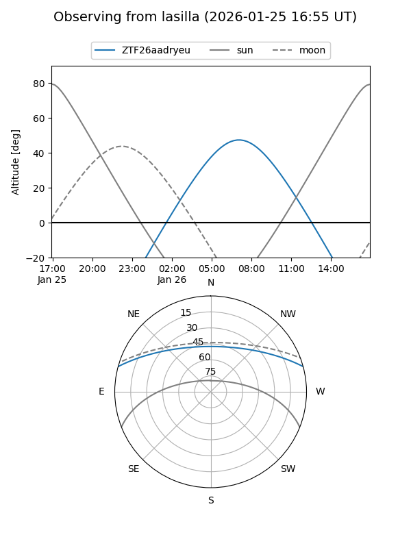
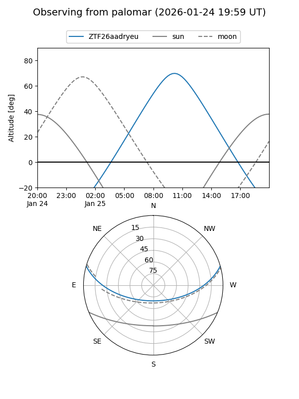

ZTF26aadryeu
Target ZTF26aadryeu at 2026-01-25 09:41
Aliases and brokers:
FINK: link
Lasair: link
ALeRCE: link
alt names
ZTF26aadryeu (ztf,fink_ztf)
Coordinates:
equatorial (ra, dec) = 160.3778,+13.42049
equatorial (HMS+DMS) = 10:41:30.67,+13:25:13.76
galactic (l, b) = (230.7192,+56.72973)
Flags:
Photometry:
last ztfr=20.13
1 ztfr detections
Lightcurve

Visibility


Additional plots